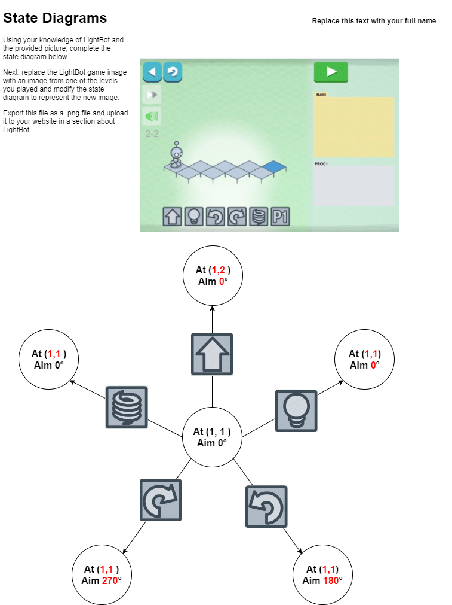

Blown to bits is a story that tells about how the internet has evolved and how "bits" travel. It talks about how bits are created and how they can not be deleated and stay on the internet forever. In chapter four they mention that not all search engines are the same. They can change what shows up when you Google, Bing, Yahoo, ect something and almost twist the truth. Search engines can also bring up forbedden things which are not always accepted in todays scociety.
Lightbot is similar to a computer because it takes inputs and makes outputs from them. Although lightbot is a simple representation of the way a computer works they both act similarly in the way that they take button presses and translate them into movement or a action. They are different in the sense that lightbot only has a few commands compared to a computer who had many.
2.It is a good idea to program is smaller increments because it will be easier to find an error that way. Short code helps to target problems in code
1.A professional programer had to figure out a code by trial and error similar to how people have to figure out how to math problems that they don't know how to solve.
4. A computer with 2 cores can run more that 2 programs because the switch very quickly between tasks and work on all the programs at once. Fast task switching is the professional term for the when a single core works on multiple tasks.
1.This is useful because in a program with lots of sprites and actions.it is easy to get confused and lose track of where each program is.
2.I think that an event is what is going on in the program and a handle is a title or tag that a program has.
A.PlayG() is saying that when something happens to the G costume it should run the program or code that is inside of it.
B.It would be convenient if they could show parts of the program that are inside other commands.
1.A fixed value helps to make sure that you don't accidently put in the wrong value. Using a fixed value gets rid of magic numbers
Pseudocode is a version of program who's easier through human understand . Pseudocode can include phrases like “This program runs for 3 seconds and then stops.”.
A.A accumulator helps to keep a tally of how many times something is pressed or used.I believe that all websites use an accumulators, also I believe that calculators use accumulators in some of their programs.
B.I think that website accumulators are there to keep track of how many visit their site.
4.An accumulator keeps track of the amount something happens while a aggregator keeps each individual action in a list.